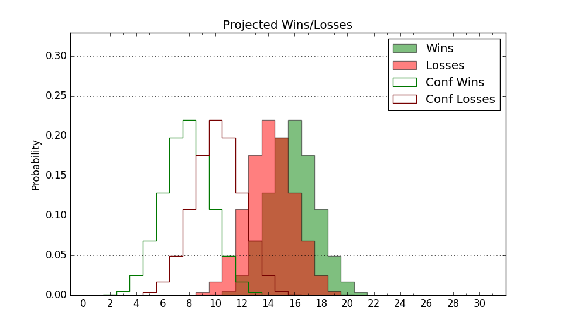

| Home | Game Probabilities | Conferences | Preseason Predictions | Odds Charts | NCAA Tournament |
| City: | Chicago, Illinois | |
| Conference: | Atlantic 10 (9th)
| |
| Record: | 2-3 (Conf) 10-7 (Overall) | |
| Ratings: | Comp.: 0.7 (158th) Net: 0.2 (162nd) Off: 105.3 (178th) Def: 105.1 (169th) SoR: 0.1 (136th) |
| Remaining | ||||||
|---|---|---|---|---|---|---|
| Date | Opponent | Win Prob | Pred. | |||
| 1/22 | Fordham (240) | 80.1% | W 80-70 | |||
| 1/29 | @ George Mason (85) | 16.8% | L 61-72 | |||
| 2/1 | Saint Joseph's (95) | 47.9% | L 72-73 | |||
| 2/4 | St. Bonaventure (89) | 44.3% | L 67-68 | |||
| 2/8 | @ Duquesne (137) | 31.2% | L 65-71 | |||
| 2/11 | @ Richmond (219) | 49.1% | L 68-69 | |||
| 2/14 | Saint Louis (112) | 54.1% | W 75-74 | |||
| 2/18 | @ Davidson (127) | 28.9% | L 71-77 | |||
| 2/21 | Dayton (74) | 36.8% | L 71-74 | |||
| 2/26 | George Washington (141) | 61.4% | W 75-71 | |||
| 3/1 | @ Saint Louis (112) | 25.7% | L 70-78 | |||
| 3/5 | Davidson (127) | 58.1% | W 75-72 | |||
| 3/8 | @ Massachusetts (200) | 45.3% | L 76-77 | |||
| Previous | Game Score | |||||
| Date | Opponent | Win Prob | Result | Off | Def | Net |
| 11/4 | Chicago St. (355) | 95.6% | W 79-72 | -9.6 | -8.7 | -18.3 |
| 11/7 | Detroit (324) | 90.6% | W 87-65 | 3.2 | 4.2 | 7.4 |
| 11/15 | @Princeton (124) | 28.6% | W 73-68 | -1.0 | 15.0 | 14.0 |
| 11/19 | Southern Utah (252) | 81.1% | W 76-72 | 6.7 | -10.0 | -3.3 |
| 11/23 | Tulsa (282) | 86.1% | W 89-53 | 12.1 | 24.2 | 36.3 |
| 12/3 | Eastern Michigan (330) | 91.1% | W 76-54 | 0.7 | 7.8 | 8.5 |
| 12/7 | South Florida (172) | 68.3% | W 74-72 | -5.3 | -1.2 | -6.5 |
| 12/15 | (N) San Francisco (71) | 21.8% | L 66-76 | -8.5 | 6.6 | -1.9 |
| 12/18 | Canisius (358) | 96.0% | W 72-60 | -14.5 | 1.6 | -12.9 |
| 12/22 | @Oakland (203) | 45.5% | L 71-72 | 9.8 | -6.4 | 3.5 |
| 12/23 | (N) College of Charleston (159) | 51.2% | L 68-77 | -14.0 | 3.2 | -10.8 |
| 12/25 | (N) Murray St. (133) | 43.7% | L 68-71 | 2.7 | -2.6 | 0.0 |
| 1/4 | VCU (54) | 28.2% | L 65-84 | 1.7 | -27.7 | -26.0 |
| 1/8 | @La Salle (193) | 43.9% | W 79-68 | 14.1 | 6.5 | 20.7 |
| 1/11 | @Saint Joseph's (95) | 21.3% | L 57-93 | -16.4 | -23.7 | -40.1 |
| 1/15 | Rhode Island (103) | 51.4% | W 81-77 | 18.0 | -7.8 | 10.2 |
| 1/18 | @Dayton (74) | 14.6% | L 81-83 | 7.6 | 5.7 | 13.3 |
| Stats & Trends | |||||
|---|---|---|---|---|---|
| Current | Day | Week | Month | Season | |
| Composite | 0.7 | -0.1 | +1.2 | -3.0 | -4.5 |
| Comp Rank | 158 | -1 | +11 | -36 | -52 |
| Net Efficiency | 0.2 | -0.1 | +1.7 | -2.8 | -- |
| Net Rank | 162 | -- | +16 | -30 | -- |
| Off Efficiency | 105.3 | +0.0 | +2.1 | +2.2 | -- |
| Off Rank | 178 | -- | +29 | +20 | -- |
| Def Efficiency | 105.1 | -0.1 | -0.4 | -5.0 | -- |
| Def Rank | 169 | -5 | -12 | -69 | -- |
| SoS Rank | 247 | -4 | +38 | +115 | -- |
| Exp. Wins | 15.8 | -0.0 | +0.8 | -2.8 | -0.8 |
| Exp. Conf Wins | 7.8 | -0.0 | +0.8 | -0.9 | -1.1 |
| Conf Champ Prob | 0.2 | +0.0 | -0.0 | -1.2 | -4.3 |

| Advanced Stats | ||
|---|---|---|
| Stat | Value | Rank |
| Off Eff FG % | 0.528 | 110 |
| Off Ast Ratio | 0.164 | 78 |
| Off ORB% | 0.287 | 186 |
| Off TO Rate | 0.155 | 225 |
| Off FT Ratio | 0.364 | 103 |
| Def Eff FG % | 0.515 | 193 |
| Def Ast Ratio | 0.139 | 117 |
| Def ORB% | 0.264 | 110 |
| Def TO Rate | 0.156 | 127 |
| Def FT Ratio | 0.343 | 204 |